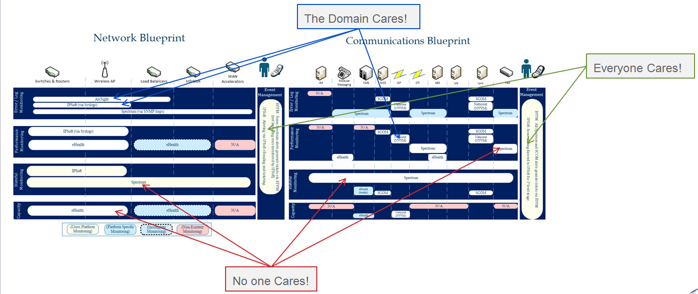
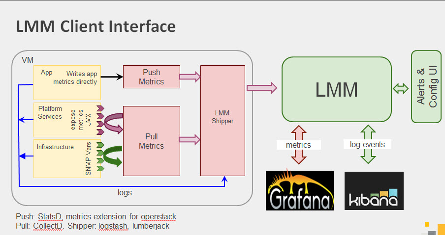
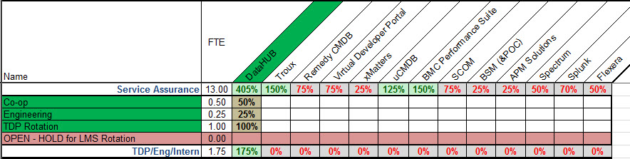
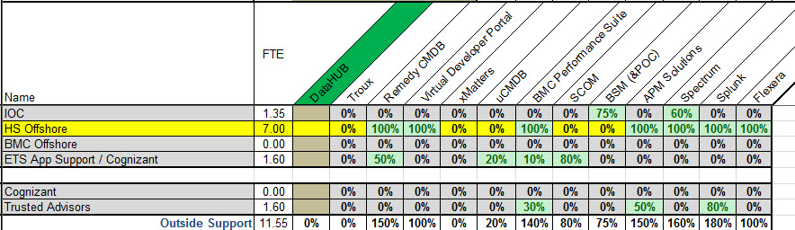

Next Generation of Service Assurance
Matt Keane / Service Assurance Team / DataHUB MyConnections Site
Centralized Monitoring Tools are DEAD

What our Customers Really Want...
- Ownership
- Control
- Agility
- Results
Example - NetMRI, NetScout, VCOPS, DynaTrace, etc.
Even if we had similar capabilities with existing tools, the essence of value is percieved through the eye of the owner. There is a pull towards products that are deeply integrated in the solution (PureApp) and within the teams direct control where they can steer the product where they know it needs to be. That also brings a sense of agility, which can drive quicker results.
The Path

Innovation in Real Time
A 42day Hackathon event where we keep our day jobs and just innovate around data to disrupt conventional thinking of monitoring and performance data consumption and capabilities.
Prototypes
B2D2 Won the hackathon with the following view of Application from a consolidated Data Lake model. Click the picture to go to the real prototype dashboard. Go to the next slide for a screen cast of the winning prototype.

Screencast
Movie Here
Who is doing this already
Symantec recently presented at Open Stack an LMM (Logging, Monitoring and Metering) projectleveraging all open source capabilities to deliver a platform built for general consumption. Additionally, the team is looking to Open Source the LMM framework eventually.

Symantec's View of the LMM Model

Great guiding principle... "Make it extremely simple to generate logs & metrics. Provide powerful query and visualizations for FREE
Architecture - 1st Viable Release
We will be aggressivley pushing for a first viable release before the end of Q1-2015. Below is our concept architecture which is modeled after the LMM concept we are working on with Symantec.
Team
We will be shifting focus and scaling back in areas where we are not making a material impact ont he future state of Service Assurance. Allow customers to regain that control they are looking for and demonstrate the value in the data.
Supporting Teams
We will be working very closely with our supporting teams in Trusted Advsors and Hosting Global Delivery to gain needed capacity and flexibility for the initial surge through our 1st viable release and to get us through 2015. The goal is to return this capacity completely to the organization.
Release 1

Open Data/Source Initiatives
We are starting work in the Open Source community with Symantec and other companies focused on Logging, Monitoring, and Metering (LMM) for the Enterprise.